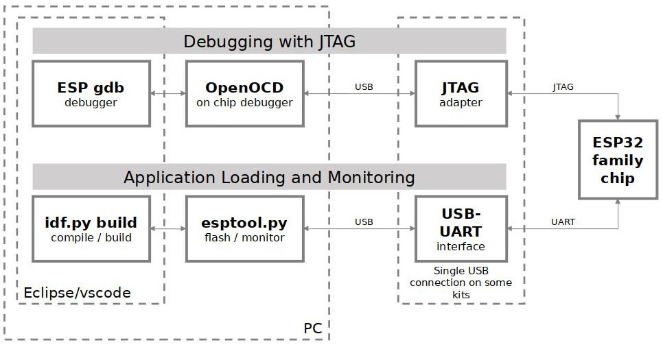

JTAG Debugging
This document provides a guide to installing OpenOCD for ESP32 and debugging using GDB.
Note
You can also debug your ESP32 without needing to setup JTAG or OpenOCD by using idf.py monitor. See: IDF Monitor and CONFIG_ESP_SYSTEM_GDBSTUB_RUNTIME.
The document is structured as follows:
- Introduction
Introduction to the purpose of this guide.
- How it Works?
Description how ESP32, JTAG interface, OpenOCD and GDB are interconnected and working together to enable debugging of ESP32.
- Selecting JTAG Adapter
What are the criteria and options to select JTAG adapter hardware.
- Setup of OpenOCD
Procedure to install OpenOCD and verify that it is installed.
- Configuring ESP32 Target
Configuration of OpenOCD software and setting up of JTAG adapter hardware, which together make up the debugging target.
- Launching Debugger
Steps to start up a debug session with GDB from Eclipse and from Command Line.
- Debugging Examples
If you are not familiar with GDB, check this section for debugging examples provided from Eclipse as well as from Command Line.
- Building OpenOCD from Sources
Procedure to build OpenOCD from sources for Windows, Linux and macOS operating systems.
- Semihosting
Introduction to semihosting feature.
- Tips and Quirks
This section provides collection of tips and quirks related to JTAG debugging of ESP32 with OpenOCD and GDB.
Introduction
The ESP32 has two powerful Xtensa cores, allowing for a great deal of variety of program architectures. The FreeRTOS OS that comes with ESP-IDF is capable of multi-core preemptive scheduling, allowing for an intuitive way of writing software.
The downside of the ease of programming is that debugging without the right tools is harder: figuring out a bug that is caused by two threads, running even simultaneously on two different CPU cores, can take a long time when all you have are printf() statements. A better (and in many cases quicker) way to debug such problems is by using a debugger, connected to the processors over a debug port.
Espressif has ported OpenOCD to support the ESP32 processor and the multi-core FreeRTOS (which is the foundation of most ESP32 apps). Additionally, some extra tools have been written to provide extra features that OpenOCD does not support natively.
This document provides a guide to installing OpenOCD for ESP32 and debugging using GDB under Linux, Windows and macOS. Except for OS specific installation procedures, the s/w user interface and use procedures are the same across all supported operating systems.
Note
Screenshots presented in this document have been made for Eclipse Neon 3 running on Ubuntu 16.04 LTS. There may be some small differences in what a particular user interface looks like, depending on whether you are using Windows, macOS or Linux and/or a different release of Eclipse.
How it Works?
The key software and hardware components that perform debugging of ESP32 with OpenOCD over JTAG (Joint Test Action Group) interface is presented in the diagram below under the "Debugging With JTAG" label. These components include xtensa-esp32-elf-gdb debugger, OpenOCD on chip debugger, and the JTAG adapter connected to ESP32 target.

JTAG debugging - overview diagram
Likewise, the "Application Loading and Monitoring" label indicates the key software and hardware components that allow an application to be compiled, built, and flashed to ESP32, as well as to provide means to monitor diagnostic messages from ESP32.
"Debugging With JTAG" and "Application Loading and Monitoring" is integrated under the Eclipse IDE in order to provide a quick and easy transition between writing/compiling/loading/debugging code. The Eclipse IDE (and the integrated debugging software) is available for Windows, Linux and macOS platforms. Depending on user preferences, both the debugger and idf.py build can also be used directly from terminal/command line, instead of Eclipse.
If the ESP-WROVER-KIT is used, then connection from PC to ESP32 is done effectively with a single USB cable. This is made possible by the FT2232H chip, which provides two USB channels, one for JTAG and the other for UART connection.
Selecting JTAG Adapter
The quickest and most convenient way to start with JTAG debugging is by using ESP-WROVER-KIT. Each version of this development board has JTAG interface already built in. No need for an external JTAG adapter and extra wiring/cable to connect JTAG to ESP32. ESP-WROVER-KIT is using FT2232H JTAG interface operating at 20 MHz clock speed, which is difficult to achieve with an external adapter.
If you decide to use separate JTAG adapter, look for one that is compatible with both the voltage levels on the ESP32 as well as with the OpenOCD software. The JTAG port on the ESP32 is an industry-standard JTAG port which lacks (and does not need) the TRST pin. The JTAG I/O pins all are powered from the VDD_3P3_RTC pin (which normally would be powered by a 3.3 V rail) so the JTAG adapter needs to be able to work with JTAG pins in that voltage range.
On the software side, OpenOCD supports a fair amount of JTAG adapters. See https://openocd.org/doc/html/Debug-Adapter-Hardware.html for an (unfortunately slightly incomplete) list of the adapters OpenOCD works with. This page lists SWD-compatible adapters as well; take note that the ESP32 does not support SWD. JTAG adapters that are hardcoded to a specific product line, e.g., ST-LINK debugging adapters for STM32 families, will not work.
The minimal signalling to get a working JTAG connection are TDI, TDO, TCK, TMS and GND. Some JTAG debuggers also need a connection from the ESP32 power line to a line called e.g., Vtar to set the working voltage. SRST can optionally be connected to the CH_PD of the ESP32, although for now, support in OpenOCD for that line is pretty minimal.
ESP-Prog is an example for using an external board for debugging by connecting it to the JTAG pins of ESP32.
Setup of OpenOCD
If you have already set up ESP-IDF with CMake build system according to the Getting Started Guide, then OpenOCD is already installed. After setting up the environment in your terminal, you should be able to run OpenOCD. Check this by executing the following command:
openocd --version
The output should be as follows (although the version may be more recent than listed here):
Open On-Chip Debugger v0.12.0-esp32-20240318 (2024-03-18-18:25)
Licensed under GNU GPL v2
For bug reports, read
http://openocd.org/doc/doxygen/bugs.html
You may also verify that OpenOCD knows where its configuration scripts are located by printing the value of OPENOCD_SCRIPTS environment variable, by typing echo $OPENOCD_SCRIPTS (for Linux and macOS) or echo %OPENOCD_SCRIPTS% (for Windows). If a valid path is printed, then OpenOCD is set up correctly.
If any of these steps do not work, please go back to the setting up the tools section (for Linux and macOS) or ESP-IDF Tools Installer (for Windows) section of the Getting Started Guide.
Note
It is also possible to build OpenOCD from source. Please refer to Building OpenOCD from Sources section for details.
Configuring ESP32 Target
Once OpenOCD is installed, you can proceed to configuring the ESP32 target (i.e ESP32 board with JTAG interface). Configuring the target is split into the following three steps:
Configure and Connect JTAG Interface
This step depends on the JTAG and ESP32 board you are using (see the two cases described below).
Run OpenOCD
Once target is configured and connected to computer, you are ready to launch OpenOCD.
Open a terminal and set it up for using the ESP-IDF as described in the setting up the environment section of the Getting Started Guide. To run OpenOCD for a specific board, you must pass the board-specific configuration. The default configuration for the built project can be found in the debug_arguments_openocd field of the build/project_description.json file. There is an example to run OpenOCD (this command works on Windows, Linux, and macOS):
openocd -f board/esp32-wrover-kit-3.3v.cfg
Note
The files provided after -f above are specific for ESP-WROVER-KIT with ESP32-WROOM-32 module. You may need to provide different files depending on the hardware that is used. For guidance see Configuration of OpenOCD for Specific Target.
You should now see similar output (this log is for ESP-WROVER-KIT with ESP32-WROOM-32 module):
user-name@computer-name:~/esp/esp-idf$ openocd -f board/esp32-wrover-kit-3.3v.cfg
Open On-Chip Debugger v0.10.0-esp32-20190708 (2019-07-08-11:04)
Licensed under GNU GPL v2
For bug reports, read
https://openocd.org/doc/doxygen/bugs.html
none separate
adapter speed: 20000 kHz
force hard breakpoints
Info : ftdi: if you experience problems at higher adapter clocks, try the command "ftdi_tdo_sample_edge falling"
Info : clock speed 20000 kHz
Info : JTAG tap: esp32.cpu0 tap/device found: 0x120034e5 (mfg: 0x272 (Tensilica), part: 0x2003, ver: 0x1)
Info : JTAG tap: esp32.cpu1 tap/device found: 0x120034e5 (mfg: 0x272 (Tensilica), part: 0x2003, ver: 0x1)
Info : esp32: Debug controller was reset (pwrstat=0x5F, after clear 0x0F).
Info : esp32: Core was reset (pwrstat=0x5F, after clear 0x0F).
If there is an error indicating permission problems, please see section on "Permissions delegation" in the OpenOCD README file located in the
~/esp/openocd-esp32directory.In case there is an error in finding the configuration files, e.g.,
Can't find board/esp32-wrover-kit-3.3v.cfg, check if theOPENOCD_SCRIPTSenvironment variable is set correctly. This variable is used by OpenOCD to look for the files specified after the-foption. See Setup of OpenOCD section for details. Also check if the file is indeed under the provided path.If you see JTAG errors (e.g.,
...all onesor...all zeroes), please check your JTAG connections, whether other signals are connected to JTAG besides ESP32's pins, and see if everything is powered on correctly.
Upload Application for Debugging
Build and upload your application to ESP32 as usual, see Step 5. First Steps on ESP-IDF.
Another option is to write application image to flash using OpenOCD via JTAG with commands like this:
openocd -f board/esp32-wrover-kit-3.3v.cfg -c "program_esp filename.bin 0x10000 verify exit"
OpenOCD flashing command program_esp has the following format:
program_esp <image_file> <offset> [verify] [reset] [exit] [compress] [encrypt] [no_clock_boost] [restore_clock] [no_skip_loaded] [force]
image_file- Path to program image file.
offset- Offset in flash bank to write image.
verify- Optional. Verify flash contents after writing.
reset- Optional. Reset target after programming.
exit- Optional. Finally exit OpenOCD.
compress- Optional. Compress image file before programming.
encrypt- Optional. Encrypt binary before writing to flash. Same functionality withidf.py encrypted-flash
no_clock_boost- Optional. Disable setting target clock frequency to its maximum possible value before programming. Clock boost is enabled by default.
restore_clock- Optional. Restore clock frequency to its initial value after programming. Disabled by default.
no_skip_loaded- Optional. Do not check whether the binary is already loaded before flashing. Disabled by default.
force- Optional. Disable checks for target compatibility with the chip type and revision range detected from the image file. Checks are enabled by default.
Alternative Method: Using program_esp_bins
For convenience when working with ESP-IDF projects, OpenOCD provides an alternative command program_esp_bins that can flash multiple binaries in a single command by reading the build configuration from the flasher_args.json file generated during the ESP-IDF build process.
This method is particularly useful because:
It automatically reads all the binary files and their flash addresses from the build output
It handles encrypted partitions automatically based on the project configuration
It eliminates the need to manually specify addresses for each binary (bootloader, partition table, application, etc.)
Basic usage:
openocd -f board/esp32-wrover-kit-3.3v.cfg -c "program_esp_bins build flasher_args.json verify exit"
Command Format
The OpenOCD flashing command program_esp_bins has the following format:
program_esp_bins <build_dir> <json_file> [verify] [reset] [exit] [compress] [no_clock_boost] [restore_clock] [no_skip_loaded] [force]
build_dir- Path to the build directory containing theflasher_args.jsonfile.
json_file- Name of the JSON file containing flash configuration (typicallyflasher_args.json).Other optional parameters work the same as
program_espcommand. See Upload Application for Debugging section for details.
You are now ready to start application debugging. Follow the steps described in the section below.
Launching Debugger
The toolchain for ESP32 features GNU Debugger, in short GDB. It is available with other toolchain programs under filename: xtensa-esp32-elf-gdb. GDB can be called and operated directly from command line in a terminal. Another option is to call it from within IDE (like Eclipse, Visual Studio Code, etc.) and operate indirectly with help of GUI instead of typing commands in a terminal.
The options of using debugger are discussed under links below:
It is recommended to first check if debugger works from Command Line and then move to using Eclipse.
Debugging Examples
This section is intended for users not familiar with GDB. It presents example debugging session from Eclipse using simple application available under get-started/blink and covers the following debugging actions:
Similar debugging actions are provided using GDB from Command Line.
Note
Debugging FreeRTOS Objects is currently only available for command line debugging.
Before proceeding to examples, set up your ESP32 target and load it with get-started/blink.
Building OpenOCD from Sources
Please refer to separate documents listed below, that describe build process.
The examples of invoking OpenOCD in this document assume using pre-built binary distribution described in section Setup of OpenOCD.
To use binaries build locally from sources, change the path to OpenOCD executable to src/openocd and set the OPENOCD_SCRIPTS environment variable so that OpenOCD can find the configuration files. For Linux and macOS:
cd ~/esp/openocd-esp32
export OPENOCD_SCRIPTS=$PWD/tcl
For Windows:
cd %USERPROFILE%\esp\openocd-esp32
set "OPENOCD_SCRIPTS=%CD%\tcl"
Example of invoking OpenOCD build locally from sources, for Linux and macOS:
src/openocd -f board/esp32-wrover-kit-3.3v.cfg
and Windows:
src\openocd -f board\esp32-wrover-kit-3.3v.cfg
Semihosting
Semihosting is a mechanism that allows code running on the target ESP32 to communicate with the host PC through the debugger connection, e.g., for printing debug messages or reading/writing files.
Tips and Quirks
This section provides collection of links to all tips and quirks referred to from various parts of this guide.
- Tips and Quirks
- Breakpoints and Watchpoints Available
- What Else Should I Know About Breakpoints?
- Flash Mappings vs SW Flash Breakpoints
- Why Stepping with "next" Does Not Bypass Subroutine Calls?
- Support Options for OpenOCD at Compile Time
- FreeRTOS Support
- Why to Set SPI Flash Voltage in OpenOCD Configuration?
- Optimize JTAG Speed
- What Is the Meaning of Debugger's Startup Commands?
- Configuration of OpenOCD for Specific Target
- How Debugger Resets ESP32?
- Can JTAG Pins Be Used for Other Purposes?
- JTAG with Flash Encryption or Secure Boot
- JTAG and ESP32-WROOM-32 AT Firmware Compatibility Issue
- Reporting Issues with OpenOCD/GDB